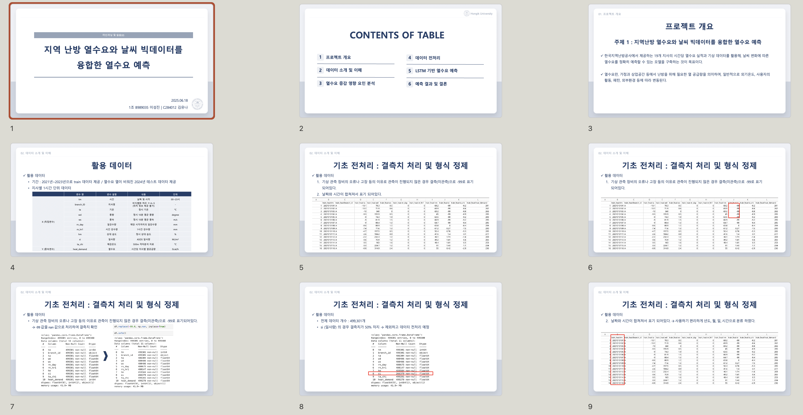
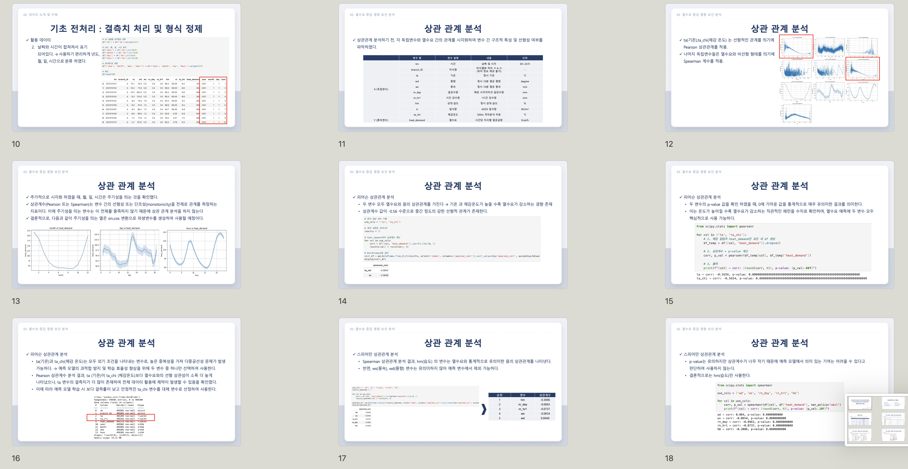
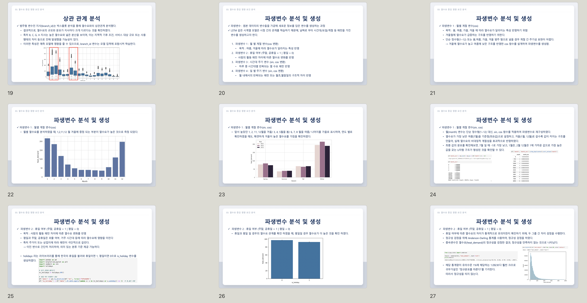
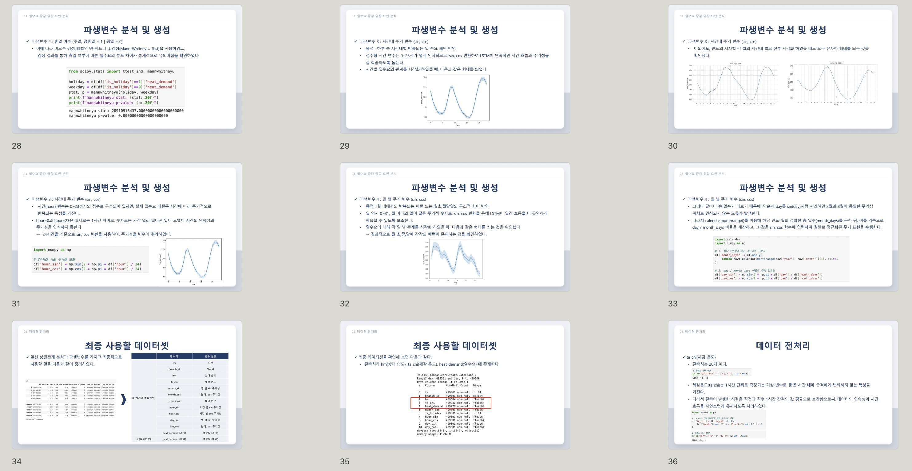
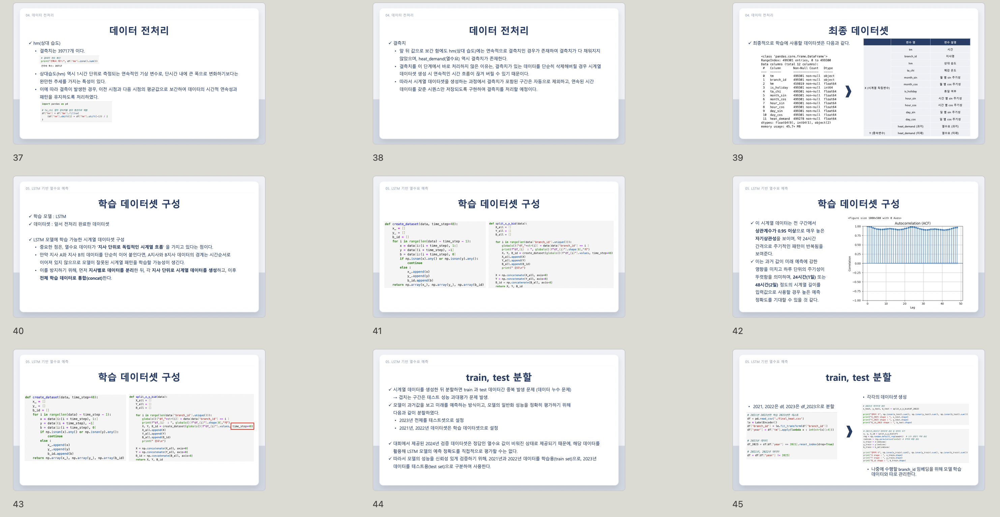
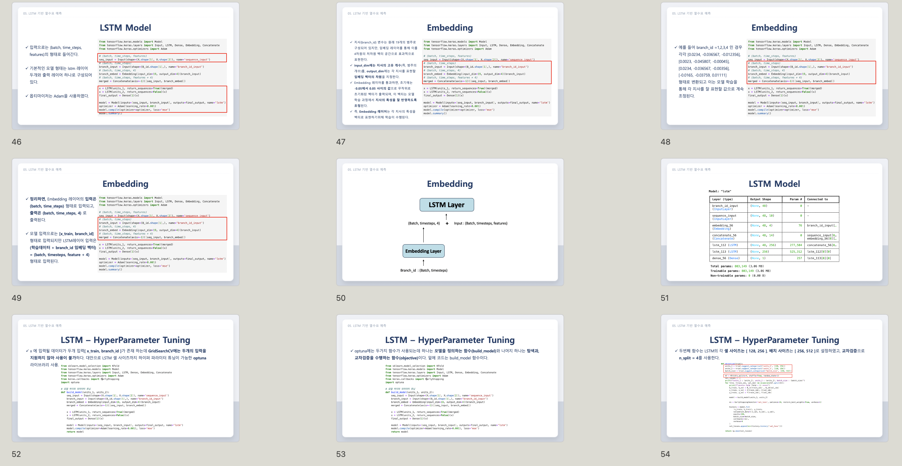
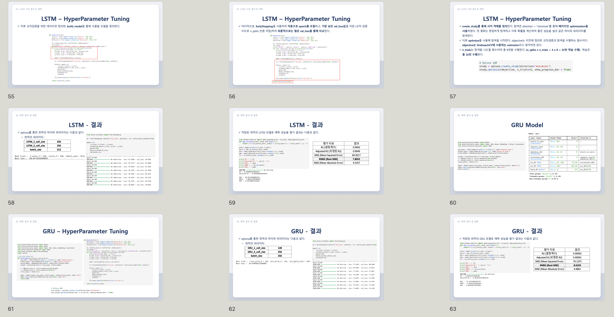
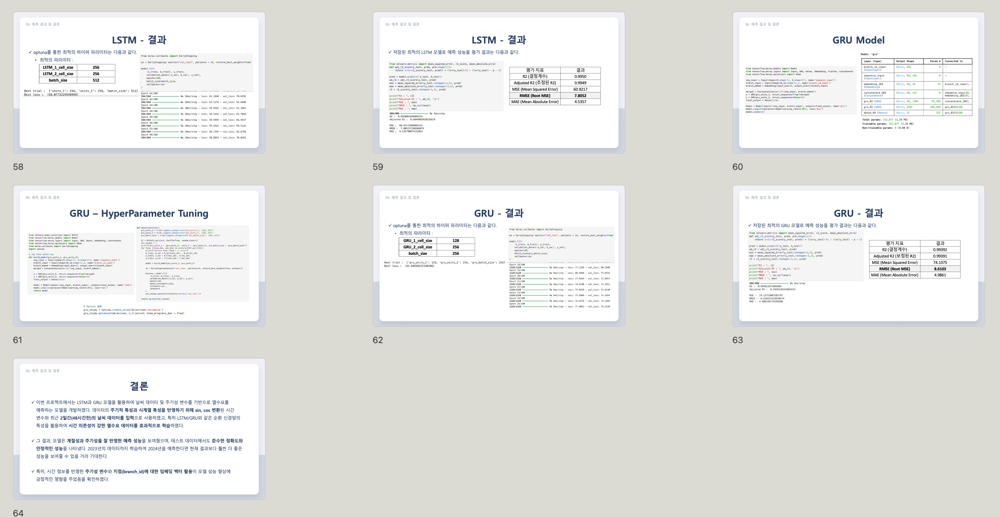

01. Project Overview
본 프로젝트는 한국지역난방공사에서 제공한 19개 지사의 시간 단위 열수요 데이터와 기상청 기상 빅데이터를 융합하여 열수요를 예측하는 시계열 딥러닝 프로젝트입니다.
열수요는 외기온도, 습도, 강수량과 같은 기상 변수뿐 아니라 시간대, 요일, 계절, 지역별 사용 패턴에 따라 복합적으로 변화합니다. 따라서 단순 회귀 모델만으로는 이러한 시간 의존성과 지역별 차이를 충분히 반영하기 어렵습니다.
이에 본 프로젝트에서는 LSTM 및 GRU 기반 시계열 모델을 활용하고, sin·cos 기반 주기성 파생변수와 지사 임베딩을 적용하여 현실적인 열수요 패턴을 학습할 수 있도록 설계했습니다.
02. Motivation & Goal
Research Motivation
본 프로젝트는 2025 날씨 빅데이터 콘테스트 참가를 목적으로 수행되었습니다. 지역난방 시스템에서 정확한 열수요 예측은 난방 에너지의 효율적 공급, 운영 비용 절감, 탄소 배출 저감 측면에서 매우 중요한 과제입니다.
기존 열수요 예측은 단순 온도 기반 회귀 모델이나 통계적 접근에 머무르는 경우가 많아, 시간대별 반복 패턴, 계절적 비대칭성, 지사별 사용 특성 차이를 충분히 반영하지 못하는 한계가 있습니다.
Research Goal
- 지역난방 열수요와 기상 데이터를 융합한 시간 단위 열수요 예측 모델 구축
- 19개 지사별 독립적인 시계열 특성을 반영한 데이터셋 설계
- 기상 변수와 시간 주기성을 고려한 파생변수 설계
- LSTM 및 GRU 모델을 활용한 시계열 예측 성능 비교
- Optuna 기반 하이퍼파라미터 최적화를 통한 성능 개선
03. My Role
Exploratory Data Analysis
지역난방 열수요 및 기상 빅데이터에 대한 탐색적 데이터 분석을 수행하고, 지사별·시간별 열수요 패턴을 확인했습니다.
Data Preprocessing
결측치 처리, 시간 변수 분해, 지사별 시계열 구성 등 모델 학습을 위한 데이터 전처리 파이프라인을 구축했습니다.
Correlation Analysis
Pearson 및 Spearman 상관관계 분석을 통해 열수요와 관련성이 높은 기상 변수를 선별하고, 다중공선성을 고려해 입력 변수를 선택했습니다.
Feature Engineering
월, 일, 시간 정보를 sin·cos 변환하여 계절성과 일 단위 주기성을 반영한 파생변수를 설계했습니다.
04. Data & Preprocessing
Data Source
한국지역난방공사 19개 지사 열수요 데이터와 기상청 기상 데이터를 활용했습니다.
Time Unit
시간 단위 데이터로 구성되어 있으며, 입력 시퀀스는 48시간 기준으로 생성했습니다.
Train / Test Split
2021~2022년 데이터를 학습 데이터로, 2023년 데이터를 테스트 데이터로 사용했습니다.
Target
종속변수는 시간 단위 열수요 값인 heat_demand입니다.
Preprocessing
- 99 값은 결측치로 판단하여 NaN 처리
- 일사량 변수는 결측률이 높아 제외
- 체감온도는 인접 시점 평균을 활용하여 보간
- 상대습도는 평균 보간 후 시계열 생성 과정에서 유효 데이터만 사용
- tm 변수를 year, month, day, hour로 분리
05. Feature Engineering
열수요는 단순히 현재 기온만으로 결정되지 않고, 계절성, 시간대, 요일, 지사별 사용 패턴의 영향을 함께 받습니다. 이를 반영하기 위해 통계적 분석과 주기성 파생변수 설계를 함께 수행했습니다.
06. Model Design
본 프로젝트에서는 LSTM과 GRU 기반 시계열 딥러닝 모델을 구성하고, 지사별 특성을 반영하기 위해 branch_id 임베딩을 함께 활용했습니다.
Input Sequence
48시간, 즉 2일 길이의 과거 시계열을 입력으로 사용했습니다.
Branch Embedding
branch_id를 4차원 임베딩 벡터로 변환하여 지사별 사용 특성을 학습하도록 했습니다.
LSTM
장기 의존성을 학습하기 위해 LSTM 기반 예측 모델을 구성했습니다.
GRU
상대적으로 간결한 구조의 GRU 모델을 함께 실험하여 LSTM과 성능을 비교했습니다.
Hyperparameter Tuning
- Optuna 기반 Bayesian Optimization 사용
- 4-fold cross validation 적용
- 총 32회 학습을 통해 최적 하이퍼파라미터 탐색
- LSTM 최적 설정: Cell 256 / 256, Batch size 512
- GRU 최적 설정: Cell 128 / 256, Batch size 256
07. Results
LSTM R²
LSTM 모델은 가장 높은 설명력을 보이며 전반적으로 우수한 성능을 기록했습니다.
LSTM RMSE
예측 오차 측면에서도 GRU보다 낮은 RMSE를 기록했습니다.
GRU R²
GRU 역시 높은 예측 성능을 보였으나, LSTM보다 소폭 낮은 성능을 보였습니다.
GRU RMSE
GRU의 RMSE는 LSTM보다 다소 높게 나타났습니다.
| Model | R² | RMSE | MAE |
|---|---|---|---|
| LSTM | 0.9950 | 7.8052 | 4.5357 |
| GRU | 0.9939 | 8.6103 | 4.9861 |
08. Presentation Materials
프로젝트 발표에 사용한 주요 자료 이미지입니다. 데이터 전처리, 변수 선택, 모델 구조, 성능 평가 결과를 시각적으로 정리했습니다.










09. Source Code
프로젝트 구현 코드는 아래 GitHub 저장소에서 확인할 수 있습니다.
GitHub Repository 보기 →